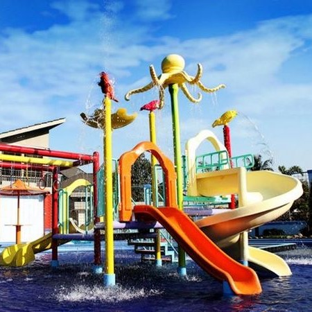

Kabupaten Sumedang (Sunda: ᮊᮘᮥᮕᮒᮦᮔ᮪ ᮞᮥᮙᮨᮓᮀ, Latin: Kabupatén Sumedang) adalah sebuah kabupaten di Provinsi Jawa Barat, Indonesia. Ibu kotanya adalah kecamatan Sumedang Utara, Sumedang, sekitar 45 km Timur Laut Kota Bandung. Kota ini juga terkenal akan Tahu-nya yang sangat Gurih dan enak.
Kabupaten Sumedang terdiri atas 26 kecamatan, 7 kelurahan, dan 270 desa. Sumedang, ibu kota kabupaten ini, terletak sekitar 45 km dari Kota Bandung. Kota ini meliputi kecamatan Sumedang Utara dan Sumedang Selatan. Sumedang dilintasi jalur utama Bandung - Cirebon.
History of Sumedang District

Pada mulanya, Kabupaten Sumedang adalah sebuah kerajaan di bawah kekuasaan Raja Galuh. Didirikan oleh Prabu Guru Aji Putih atas perintah Prabu Surya Dewata sebelum Keraton Galuh dipindahkan ke Pakuan Pajajaran, Bogor. Seiring dengan perubahan zaman dan kepemimpinan, nama Sumedang mengalami beberapa perubahan.
Geographical

Kabupaten Sumedang terdiri atas 26 kecamatan, 7 kelurahan, dan 270 desa. Sumedang, ibu kota kabupaten ini, terletak sekitar 45 km dari Kota Bandung. Kota ini meliputi kecamatan Sumedang Utara dan Sumedang Selatan. Sumedang dilintasi jalur utama Bandung - Cirebon.
Bagian Barat Daya wilayah Kabupaten Sumedang merupakan kawasan perkembangan Kota Bandung. IPDN (Institut Pemerintahan Dalam Negeri), sebelumnya bernama STPDN (Sekolah Tinggi Pemerintahan Dalam Negeri), UPI (Universitas Pendidikan Indonesia), ITB (Institut Teknologi Bandung), serta Universitas Padjajaran berlokasi di Kecamatan Jatinangor.
Sebagian besar wilayah Sumedang adalah pegunungan, kecuali di sebagian kecil wilayah Utara berupa dataran rendah. Gunung Tampomas (1.684 mdpl), merupakan dataran tertinggi di kabupaten ini yang utara Sumedang.
Tourist Destinations
Sumedang merupakan sebuah Kabupaten di Jawa Barat, Kabupaten ini memiliki sejuta pesona dan panaroma alam yang menakjubkan dan masih banyak yang tersembunyi, sehingga masih banyak orang yang belum mengetahui akan keindahan dan tempat keren yang ada di Sumedang tersebut. Sumedang punya banyak Spot objek wisata keren, mulai dari Situs budaya, situs bersejarah, spot foto foto kekinian , sampai air terjun yang sangat memanjakan mata dan harus segera kalian explore.
Wisata Air Gajah Depa - Cimalaka, Jawa Barat

Wisata Air Gajah Depa merupakan salah satu wisata air yang ada di daerah Cimalaka. Jika sebelumnya hanya ada Cipanteneun, maka sekarang ada pilihan lain yang menjadi tujuan wisata air. Wisata Air Gajah Depa merupakan wisata air yang modern dengan suasana menarik disertai dengan dentuman atau gemuruh air.
Curug Cinulang - Cicalengka, Jawa Barat
Air terjun selalu memiliki pesona tersendiri di setiap tempat. Air terjun dengan sejuta pesona di Jawa Barat salah satunya adalah Curug Cinulang atau Sindulang. Disebut Curug Sindulang karena lokasinya berada di Desa Sindulang. Keunikan curug ini karena tidak hanya memiliki 1 air terjun tapi 2 yang saling berdampingan.
Menara Loji - Sayang, Jatinangor, Sumedang, Jawa Barat
Air terjun selalu memiliki pesona tersendiri di setiap tempat. Air terjun dengan sejuta pesona di Jawa Barat salah satunya adalah Curug Cinulang atau Sindulang. Disebut Curug Sindulang karena lokasinya berada di Desa Sindulang. Keunikan curug ini karena tidak hanya memiliki 1 air terjun tapi 2 yang saling berdampingan.
Puncak Damar - Pakualam, Darmaraja, Sumedang, Jawa Barat
Air terjun selalu memiliki pesona tersendiri di setiap tempat. Air terjun dengan sejuta pesona di Jawa Barat salah satunya adalah Curug Cinulang atau Sindulang. Disebut Curug Sindulang karena lokasinya berada di Desa Sindulang. Keunikan curug ini karena tidak hanya memiliki 1 air terjun tapi 2 yang saling berdampingan.